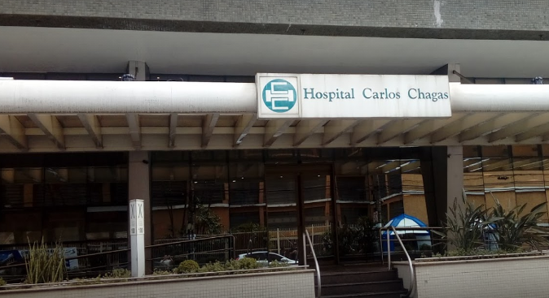
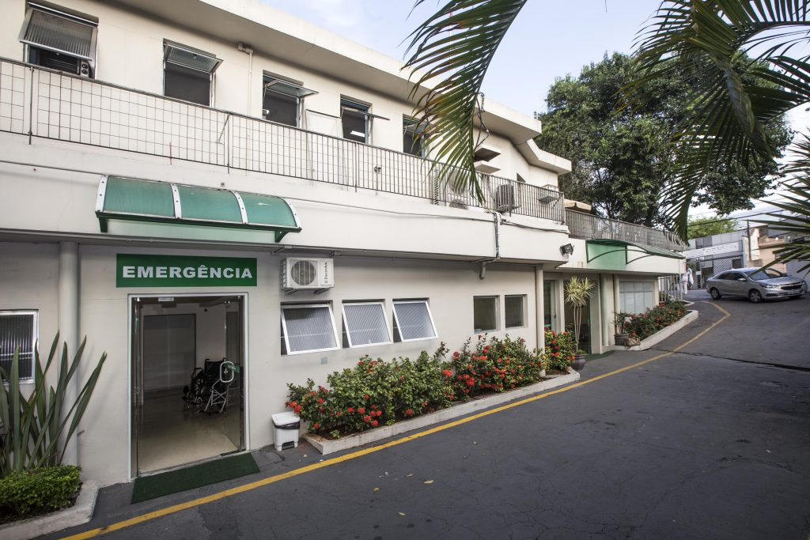

MINHA CIDADE GUARULHOS
HOSPITAIS & LABORATÓRIOS

O Hospital Carlos Chagas começou em 1962, como um modesto pronto-socorro de apenas quatro leitos. Em 1964, com 12 leitos, passou a chamar-se Pronto-Socorro e Maternidade Guarulhos. Em 1969, passou a chamar-se Hospital Carlos Chagas.
Endereço: R. Barão de Mauá, 100 - Centro, Guarulhos - SP, 07114-110
Telefone: (11) 4501-6000
CONVÊNIOS ATENDIDOS PELO HOSPITAL CARLOS CHAGAS
O Hospital Carlos Chagas trabalha com diversos convênios. Para facilitar o seu acesso ao hospital, listamos aqui os planos que são conveniados ao Carlos Chagas. Confira:
- Abert;
- Afresp;
- Allianz;
- Bradesco Empresarial, Cabesp;
- CEF - (Caixa Econômica Federal - Saúde Caixa);
- Care Plus;
- Cassi;
- CET;
- Cetesb;
- Cruzeiro do Sul;
- Economus;
- Fundação Cespama Saúde;
- Geap;
- Goldem Cross;
- Grupo Amil;
- Amil Planos por ADM;
- life Empresarial;
- Marítima Unificado / Sompo Saúde;
- Mediservice;
- Metrus;
- Omint Saúde;
- Notre Dame Intermédica;
- Petrobrás Distribuidora;
- Porto Saúde / Itaú Unificado;
- Sabesprev;
- São Paulo Transporte;
- Seisa Diferenciado;
- Seisa Básico / Intermediário;
- Sulamérica;
- Unihosp Saúde.
O Delboni Medicina Diagnóstica, marca da Dasa, maior ecossistema de saúde integrada do Brasil, tem uma história de mais de 60 anos de eficiência no cuidado de seus pacientes.
Endereço: Av. Paulo Faccini, 291 - Macedo, Guarulhos - SP, 07111-000
Telefone: (11) 3049-6999
CONVÊNIOS ATENDIDOS POR DELBONI
- Allian Saúde;
- Amil;
- Bradesco Saúde;
- Central Nacional Unimed;
- Golden Cross;
- Notre Dame Intermédica;
- Omint;
- Plena Saúde;
- Porto Seguro Saúde;
- Prevent Sênior;
- Prudential do Brasil;
- Q Saúde;
- Sompo Saúde;
- Sulamérica.
O Hospital Stella Maris foi inaugurado no dia 25 de Março de 1965. A Congregação das Filhas de Nossa Senhora Stella Maris nasceu da coragem de três jovens italianas Gilda Tatasciore, Giuseppina Volpi e Paolina Doninelli que deixaram sua bela pátria “Itália” para servir doentes hansenianos no Brasil. As dificuldades enfrentadas para realizar tal ideal foram incontáveis, tanto na Itália como no Brasil. Por fim, conseguiram ser aceitas no antigo Sanatório Padre Bento de Guarulhos para leprosos (hoje hansenianos), em 15 de fevereiro de 1954. Os doentes se encontravam em uma situação deplorável devido a falta de cuidados em todos os sentidos. Aos poucos as jovens foram conquistando a confiança dos doentes que achavam estranho demais que jovens sadias, estrangeiras, se interessassem por eles, quando nem os próprios funcionários o fazia.
Endereço: R. Maria Cândida Pereira, 568 - Vila Itapegica, Guarulhos - SP, 07041-020
Telefone: (11) 2423-8500
CONVÊNIOS ATENDIDOS POR STELLA MARIS
- Ameplan;
- Amil;
- Assistência Médica São Miguel;
- Alvorecer (Blue Med);
- AWP - Service Brasil;
- Bradesco Seguro Saúde;
- BioVida Saúde;
- Care Plus;
- Cruz Azul;
- Garantia de Saúde;
- Gama Saúde;
- Geap;
- Green Line;
- HBC Saúde;
- Intermédica/ Notre Dame;
- Interclínicas;
- IPREF - Previdência;
- Life Empresarial;
- Med-Tour;
- Medisanitas;
- Mediservice;
- NEXT (Amil);
- NotreDame;
- Omint;
- Porto Seguro Saúde/ Portomed;
- Postal Saúde;
- Santa Rita (Santaris);
- Sompo (Marítima);
- Sistemas e Planos de Saúde;
- Sul América Seguro Saúde;
- Trasmontano;
- Unimed Guarulhos;
- Unihosp;
- Usisaude;

Foi fundado em 2001 para oferecer os melhores planos de saúde com o melhor custo/benefício, recursos próprios e próximos aos seus pacientes na região de Guarulhos, São Paulo.
Endereço: Av. Mariana Ubaldina do Espírito Santo, 654 - Jardim Bom Clima, Guarulhos - SP, 07197-000
Telefone: (11) 2472-4200
CONVÊNIOS ATENDIDOS POR HOSPITAL BOM CLIMA
- Ameplan Saúde;
- Amil Saúde;
- Bradesco Saúde;
- SulAmérica;
- Unimed Guarulhos;
PLANOS PRÓPRIOS DO HOSPITAL BOM CLIMA
- Plano Individual e Familiar — Atende a partir de uma pessoa física;
- Plano PME (Empresarial) — Atende a partir de 4 (quatro) vidas;
- Plano coletivo por adesão — Pode ser contratado por funcionários públicos municipais, funcionários e sócios do comércio, servidores municipais, estaduais e federais, estudantes a partir de 4 anos e microempreendedores individuais (MEI).;
O Hospital Geral de Guarulhos é um hospital público localizado no município brasileiro de Guarulhos, no estado de São Paulo e atualmente é administrado pela organização social Sociedade Paulista para o Desenvolvimento da Medicina.
O Hospital Geral, por ser público, atende qualquer cidadão.
Endereço: Alameda dos Lírios, 300 - Parque Cecap, Guarulhos - SP, 07190-012
Telefone: (11) 3466-1350
© 2023 Cidade de Guarulhos. Todos os direitos reservados.